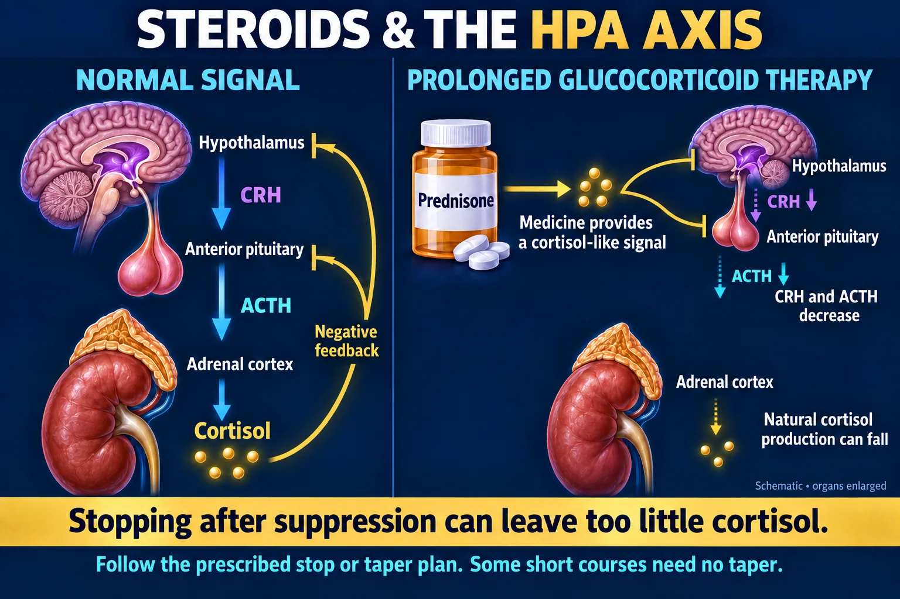
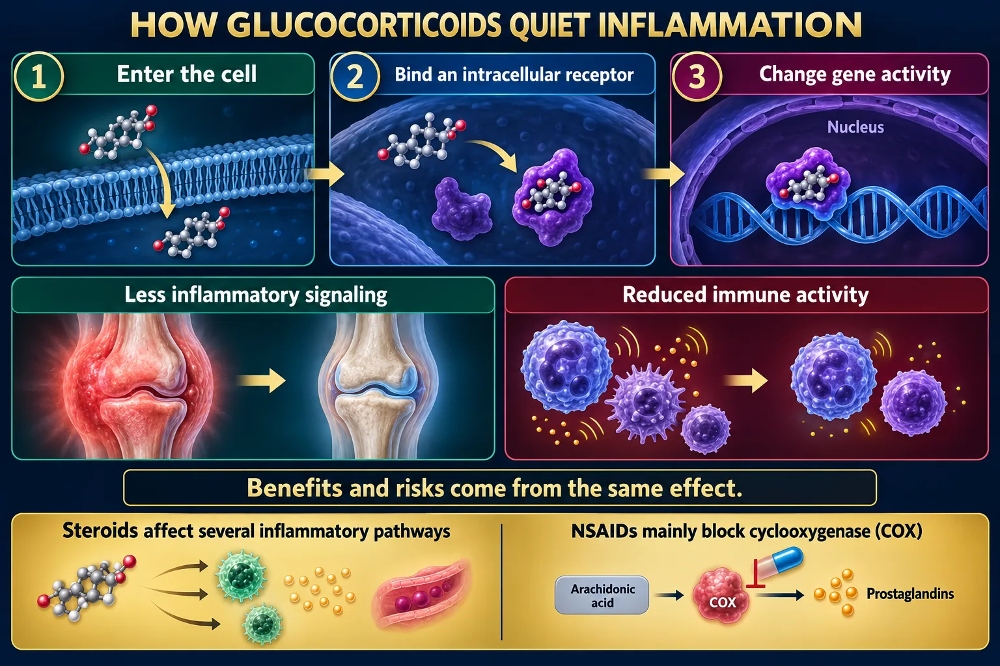
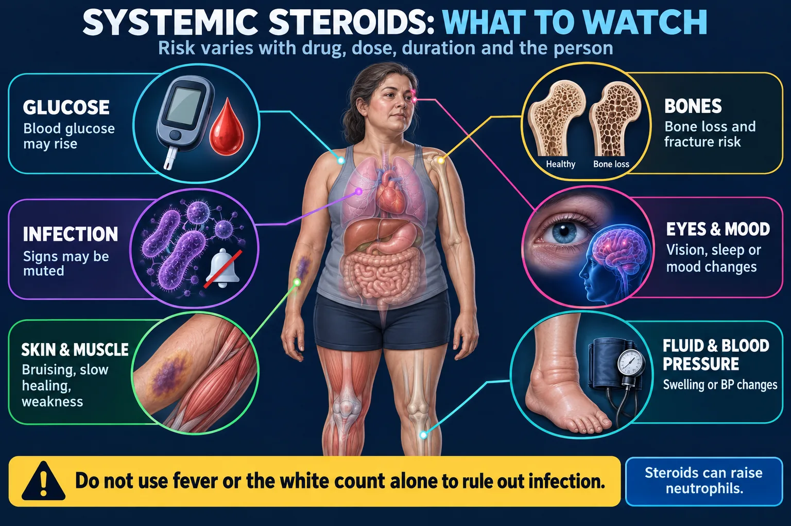

Corticosteroids — the stress & swelling hormone, and the enormous price you pay for it
Every corticosteroid is a copy of cortisol — the hormone your adrenal glands make in a crisis. Give it and inflammation stops beautifully. Keep giving it and you slowly build a patient with iatrogenic Cushing's syndrome whose own adrenal glands have gone to sleep. Then the single most dangerous thing anyone can do is stop the drug suddenly — because the sleeping adrenals cannot restart in time, and the patient falls into adrenal crisis. That link is the whole point of this page: see NG-287 — Addison's vs Cushing's.
One drug switches off the inflammatory cascade at the very top — which is why it works on everything, and why it wrecks everything.

Reduced brain signaling can suppress natural cortisol production.
🔍 Open full-size image🖼️ Shown in the picture: Glucocorticoids and the HPA axis ↑

Changes in gene activity reduce inflammatory signaling and immune activity.
🔍 Open full-size imageAnything inflamed, and anything that needs a stress response the body can't mount:
One drug, an adverse effect in nearly every body system. Long-term steroids create iatrogenic Cushing's syndrome.

Connect potential effects to what the nurse assesses.
🔍 Open full-size imageAnswer first: daily weight is the single most important thing this patient monitors.
Steroids suppress the immune response AND the signs of infection. The patient can be septic without a dramatic fever. The white count is unreliable too: steroids themselves can raise it (extra neutrophils), so a high count does not prove infection and a normal one does not rule it out.
🖼️ Shown in the picture: Systemic steroid monitoring map ↑
Cortisol raises blood glucose by design — it mobilizes fuel for a crisis. So steroids raise the sugar of everyone, diabetic or not.
🖼️ Shown in the picture: Systemic steroid monitoring map ↑
This is the one rule that turns a nuisance drug into a lethal one. Taper to let the adrenal glands wake up.
Why is it prescribed? Which drug, dose, duration and prior exposure?
Some short courses stop without a taper. Longer treatment may require a gradual reduction.
Monitor disease recurrence, withdrawal symptoms and adrenal insufficiency.
Illness or procedures may require extra steroid coverage when adrenal function is suppressed.
No universal taper schedule: follow the prescriber’s written plan; recovery varies.
Weeks of exogenous steroid switch off CRH and ACTH, and the adrenal cortex atrophies. Remove the drug in one step and the body has no cortisol at all — it cannot maintain blood pressure, blood sugar or sodium.
The result is acute adrenal insufficiency (adrenal crisis): hypotension progressing to shock, hypoglycemia, hyponatremia, vomiting, weakness and collapse. (Hyperkalemia belongs mainly to primary Addison’s — after steroid withdrawal the aldosterone layer usually still works.)
Recovery of the axis can take weeks to many months after long courses — which is why tapers can be slow and why patients on chronic steroids need stress dosing long after the drug is stopped.
🖼️ Shown in the picture: Glucocorticoids and the HPA axis ↑
Most steroid questions are testing one of four things: taper, infection, weight, or sugar.
| ✅ Shows understanding | ❌ Needs more teaching |
|---|---|
| "I will not stop this medication suddenly — I'll follow the taper." | "When I feel better I'll just stop taking it." |
| "I'll report any fever or signs of infection right away." | "A little fever is expected on steroids." |
| "The most important thing to monitor is my weight — daily." | "I'll weigh myself once a week." TOO INFREQUENT |
| "I'll call if I gain a pound in a day or a few pounds in a few days." | "New swelling in both feet is normal on this drug." |
| "I'll take it in the morning with food." | "I'll take it at bedtime on an empty stomach." |
| "I'll tell the surgeon and dentist that I take steroids, and ask whether the dose should go up." | "I should stop it before surgery so it doesn't interfere." |
| "I'll check my blood sugar more often." | "I'll call the doctor immediately for any tiny rise in blood sugar." EXPECTED EFFECT |
| "I'll avoid ibuprofen and alcohol and report black stools." | "I'll take naproxen with it for my joint pain." |
| "I'll wear medical alert identification." | "Nobody needs to know I'm on this." |
From Codex’s 7 Oct review, sources checked that day. For tests and NCLEX-style questions, answer the way your textbook teaches.
The endocrine other half: NG-287 — Addison's vs Cushing's (too little vs too much cortisol — the disease version of everything on this page). Because steroids raise glucose: NG-290 — Diabetes, NG-292 — Diabetes II and NG-291 — DKA vs HHS.